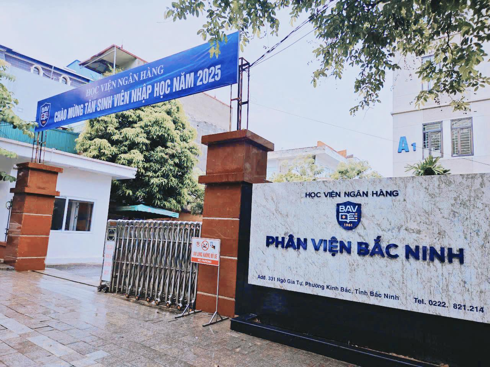
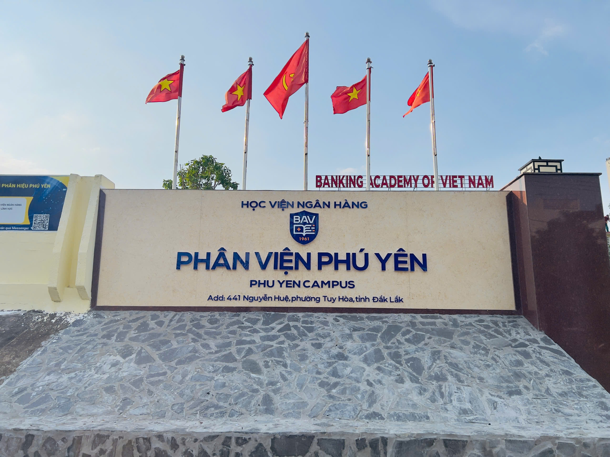
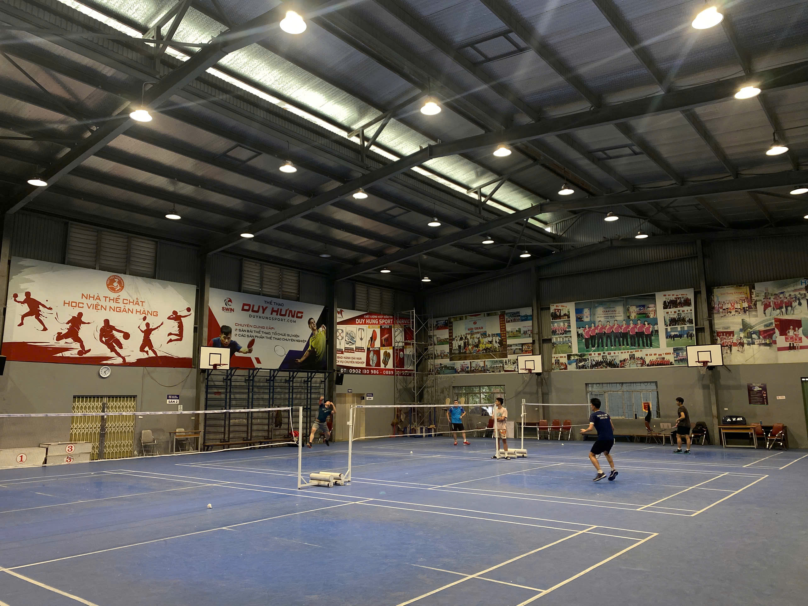
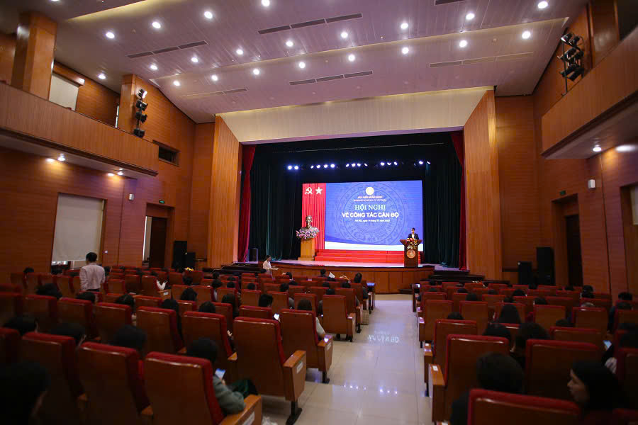
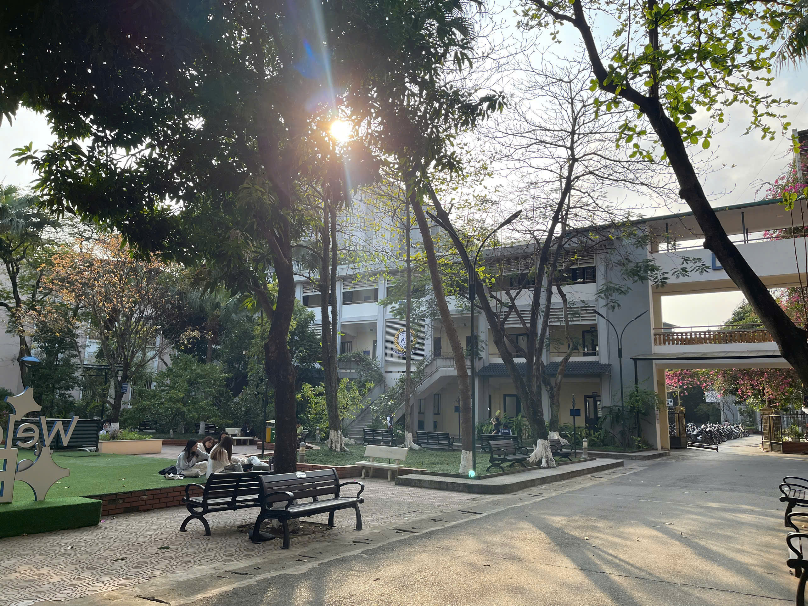

1. Giới thiệu chung
Học viện Ngân hàng (Banking Academy of Vietnam – BAV) là trường đại học công lập trực thuộc Ngân hàng Nhà nước Việt Nam và chịu sự quản lý nhà nước về giáo dục của Bộ Giáo dục và Đào tạo. Trường được thành lập năm 1961 với tiền thân là Trường Cao cấp Nghiệp vụ Ngân hàng.
Hiện nay Học viện là một trong những trường đại học hàng đầu tại Việt Nam trong lĩnh vực tài chính, ngân hàng, kinh tế và quản trị kinh doanh với hơn 16.000 sinh viên đang theo học.
- Tên tiếng Việt: Học viện Ngân hàng
- Tên tiếng Anh: Banking Academy of Vietnam (BAV)
- Năm thành lập: 1961
- Trụ sở chính: 12 Chùa Bộc, Đống Đa, Hà Nội
- Mã tuyển sinh: NHH
- Website: https://hvnh.edu.vn


2. Lịch sử hình thành và phát triển
Giai đoạn 1961 – 1997
Trường Cao cấp Nghiệp vụ Ngân hàng được thành lập theo Quyết định số 3072-VG ngày 13/9/1961 của Thủ tướng Chính phủ. Nhiệm vụ chính của trường là đào tạo cán bộ trung cấp ngân hàng và bồi dưỡng nghiệp vụ cho cán bộ trong ngành.
Giai đoạn 1976 – 1992:
Ngân hàng Nhà nước Việt Nam thành lập thêm cơ sở đào tạo tại Thành phố Hồ Chí Minh nhằm đào tạo cán bộ ngân hàng cho khu vực phía Nam.
Giai đoạn 1993 – 1997
Trung tâm Đào tạo và Nghiên cứu Khoa học Ngân hàng được thành lập, đánh dấu bước phát triển mới trong công tác đào tạo và nghiên cứu khoa học.
Giai đoạn từ 1998 đến nay
Tổ chức lại Trung tâm Đào tạo và Nghiên cứu Khoa học Ngân hàng. Học viện có nhiệm vụ đào tạo từ bậc chuyên nghiệp đến đại học và sau đại học trong lĩnh vực tài chính – ngân hàng, tổ chức nghiên cứu khoa học và hợp tác đào tạo quốc tế.
3. Hệ thống cơ sở đào tạo
- Trụ sở chính: 12 Chùa Bộc, Đống Đa, Hà Nội
- Phân viện Bắc Ninh
- Phân viện Phú Yên
- Cơ sở đào tạo Sơn Tây



4. Cơ sở vật chất
- Hệ thống giảng đường hiện đại
- Thư viện với hàng nghìn đầu sách chuyên ngành
- Phòng máy tính và phòng nghiên cứu
- Sân bóng đá và nhà thi đấu thể thao
- Khu ký túc xá sinh viên



5. Các ngành đào tạo
Chương trình Cử nhân Chất lượng cao
- Kế toán
- Ngân hàng
- Quản trị kinh doanh
- Marketing số
- Tài chính
- Kinh doanh quốc tế
- Thương mại điện tử
- Hệ thống thông tin quản lý
Chương trình Cử nhân Chuẩn
- Kế toán
- Kiểm toán
- Ngân hàng
- Ngân hàng số
- Marketing
- Khoa học dữ liệu
- Công nghệ tài chính
- Công nghệ thông tin
- Luật kinh tế
Chương trình Cử nhân Liên kết quốc tế
- Kế toán (ĐH Sunderland, Anh)
- Tài chính – Ngân hàng (ĐH Sunderland, Anh)
- Ngân hàng và Tài chính quốc tế (ĐH Coventry, Anh)
- Quản trị kinh doanh (City University, Hoa Kỳ)
- Marketing số (ĐH Coventry, Anh)
- Kinh doanh quốc tế (ĐH Coventry, Anh)